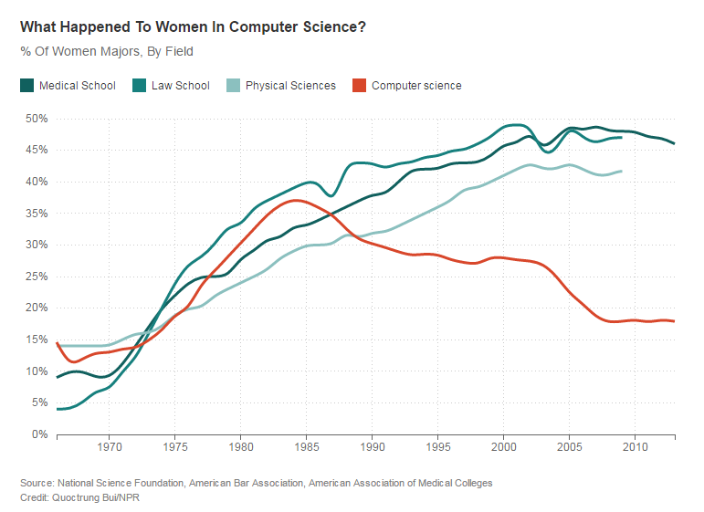

The term computer programmer can refer to a specialist in one area of computer programming or to a generalist who writes code for many kinds of software.
During a nine-month period in 1842–1843, Ada Lovelace translated the memoir of Italian mathematician, Luigi Menabrea about Charles Babbage's newest proposed machine, the Analytical Engine.
There is an ongoing debate on the extent to which the writing of programs is an art form, a craft, or an engineering discipline. In general, good programming is considered to be the measured application of all three, with the goal of producing an efficient and evolvable software solution (the criteria for "efficient" and "evolvable" vary considerably).
In this generation, there are new devices coming out every year and they are becoming more innovative and helping everyone live easier and better.
It is one thing to know how to use these technologies. It’s another, however, to understand the logic behind them. Coding draws back the seeming “magic” of technology so they can truly understand the logic and science that controls this technology discovery that is all the more magical.
Even if doing the actual programming isn't your thing, there are other ways to be involved in the computer science world.
The share of women in computer science started falling at roughly the same moment when personal computers started showing up in U.S. homes in significant numbers.
